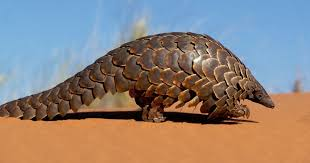

El pangolín
 El pangolín vive en la República Democrática del Congo, donde habita en los bosques tropicales. Es un mamífero insectívoro nocturno que se encuentra en peligro de extinción.
Amenazas
Caza furtiva para obtener carne de animales silvestres y para usos medicinales tradicionales Comercio internacional ilegal Pérdida de hábitat